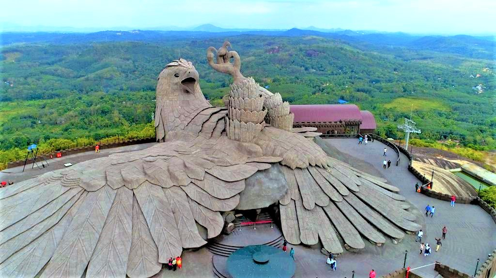
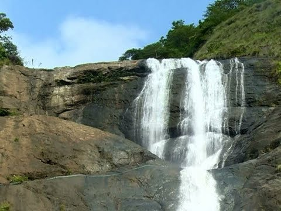

Jatayu Rock
Jatayu Earth Center, also known as Jatayu Nature Park or Jatayu Rock,
is a park and tourism centre at Chadayamangalam in Kollam district of Kerala.
It stands at an altitude of 350m above the mean sea level. Jatayu Nature Park holds the distinction of
having the world's largest bird sculpture, which is of Jatayu.
1 / 3

2 / 3

Thangassery Lighthouse
The Thangassery Lighthouse, also known as the Tangasseri Light House, boasts of being the second tallest on the entire coast of Kerala and is thus even one of the most visited lighthouses in the state on this account. Located at Tangasseri in the city of Kollam, it is one of the two lighthouses in the Kollam Metropolitan Area and is presently under the surveillance of the Chennai Directorate General of Lighthouses and Lightships.
The Thangassery Lighthouse, also known as the Tangasseri Light House, boasts of being the second tallest on the entire coast of Kerala and is thus even one of the most visited lighthouses in the state on this account. Located at Tangasseri in the city of Kollam, it is one of the two lighthouses in the Kollam Metropolitan Area and is presently under the surveillance of the Chennai Directorate General of Lighthouses and Lightships.
3 / 3

Palaruvi Waterfalls
Palaruvi waterfalls is the 32nd highest waterfalls in India. Located in the sleepy village of Aryankavu in the district of Kollam, Palaruvi Waterfalls, which literally translates to 'Stream of Milk', comes down through rocks from a height of 300 feet. This has turned into a delightful picnic spot where one can enjoy a spectacular view uninterrupted.
Palaruvi waterfalls is the 32nd highest waterfalls in India. Located in the sleepy village of Aryankavu in the district of Kollam, Palaruvi Waterfalls, which literally translates to 'Stream of Milk', comes down through rocks from a height of 300 feet. This has turned into a delightful picnic spot where one can enjoy a spectacular view uninterrupted.